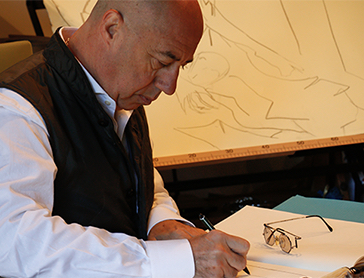
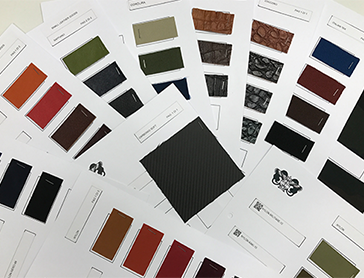
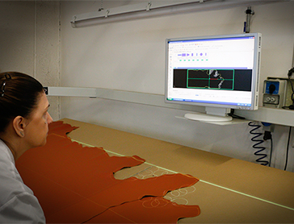
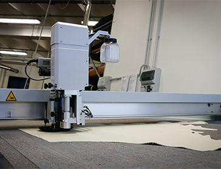
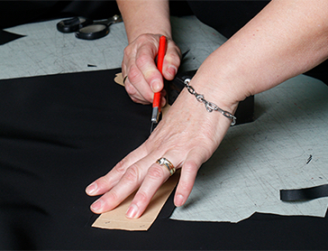
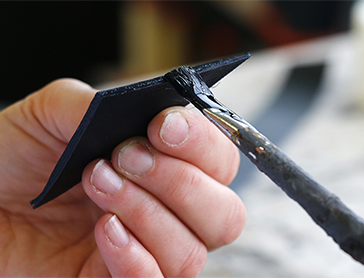
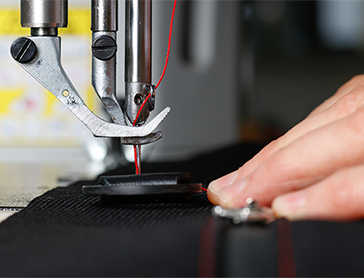

Production
GIACOMO VALENTINI의 작품은 모두 made in Italy,
하나 하나가 숙련 된 장인의 핸드 메이드입니다.
컬렉션은 이태리 특유의 센스와 기술이 깊이 숨 쉬고 있습니다.
Made in ITALY
메이드 인 이태리
GIACOMO VALENTINI의 디자이너 인 Giacomo Valentini는 스타일, 브랜드, 종교오브제의 제작자이며, 이탈리아 국내외에서 유명한 Made in Italy 제품의 뛰어난 대사입니다. GIACOMO VALENTINI 브랜드는 그가 디자인 한 브랜드 중 가장 남성적인 느낌을 확실하게 내고있는 컬렉션입니다. GV는 신비하고 우아한 디자인과 강력함, 그리고 열정이 느껴지는 독창성 넘치는 스타일을 매력으로 표현한 브랜드이며, 고정관념을 뺀 디테일로 독창성을 지향하는 남성에게 압도적인 지지를 받고 있습니다.
Giacomo Valentini is a style, brands and cult-objects creator, in the world of Design. Giacomo Valentini is an Ambassador of Made in Italy excellences at home and abroad. A brand Giacomo Valentini is strong men 's taste collection in his designed collection. Essence such as powerfulness and passion can be felt also in mysterious and elegant design and the original attractive styles overwhelmingly endorsed by genuine -oriented men.
GIACOMO VALENTINI 제품은 정교한 첨단 기술에 의해 만들어진 엄선된 소재를 사용하고 있습니다. 이태리 가죽을 기반으로 1893년 Costamasnaga(코스타마스나가)에서 창업한 전통 직물 공장 Tessitura Limonta 사제 (리 몬타)의 고급 이탈리안 나일론을 비롯한 고품질 이탈리안 캔버스 Jakcanvas (잭 캔버스) 소재, 첨단 소재 카본 페이버 (Soft Carbon Fiber / 소프트 카본 섬유) 등을 사용하여, 지금까지와 다른 이채로운 소재의 조합 방식이 발휘된 GV컬렉션의 정신과 이미지에서 전통 소재와 기술을 겸비한 절묘한 조합을 느껴보세요.
GIACOMO VALENTINI products use carefully selected materials produced by sophisticated high technology. Based from Italian leather, Italian Nylon produced by the prestigious Limonta company founded in Costamasnaga on 1893, prestigious high quality Italian canvas JAKCANVAS, and Italian Soft Carbon Fiber as HI-TEC material and more. the conspicuous figure as brilliant material combinations are totally different from before. Please enjoy the exquisite combination of traditional materials and technological materials crossed from the spirit and image of the GV collection.
-
NYLON LIMONTA
리몬타 나이론
- 1893년 코스타마즈나가에서 창업한 최고급 원단 제조 업체로 알려진 리 몬타 사의 나일론을 사용하고 있습니다.
-
JAKCANVAS
자카드 캔버스
- GV 컬렉션에 사용되는 캔버스 원단은 잭 캔버스라는 일본과 이탈리아 문화의 융합의 산물입니다. 거친 감촉과 불균일한 색조의 캔버스 천은 유일무이하고 세련되고, 형용할 수 없는 아름다움을 가지고 있습니다.
-
CARBON FIBER SOFT
탄소 섬유
- 고열과 고압으로 마무리 된 탄소 섬유의 장점은 "철보다 가볍고 철보다 단단한 내구성"입니다. GIACOMO VALENTINI 제품에 사용되는 탄소 섬유는 이탈리아 고급 스포츠카의 바디에도 사용되는 고급 소재와 동일한 소재이며, 고열과 고압을 가하기 전의 로우 카본의 표면에 PU 가공을 한 것 입니다. 탄소 섬유는 로우 카본에 압력을 가하고 고온에서 구움으로써 철보다 가볍고 철보다 강한 강도를 가진 특수 소재로 모습을 바꿉니다. 가공 할 때 걸리는 압력과 굽는 온도에 따라 소재의 강도가 달라 비행기 기체나 열차, 헬기 등에 사용되는 소재에 변화됩니다. 가공에는 고도의 기술이 필요하며 경험을 쌓은 베테랑 기술자 만이 제작에 참여할 수 있습니다.
-
ITALIAN TEK
이탈리안 발리 스틱
- 스포츠카의 시트 부분에 사용되는 원단으로 마찰 강도를 겸비한 특수 직물입니다. 악천후 속에서의 테스트를 통과 한 변형이나 변색, 열화 등의 변질을 일으키지 않는 우수한 소재입니다. 비즈니스 가방 시리즈 등에 사용되는 소재 "TEKNICO"에 비해 원단이 부드러운 점이 포인트이며, 가방에 사용되는 것은 드물고 주로 스포츠카 산업에서 사용되고 있습니다.

-
STRAP TEK
폴리 우레탄
- 매우 가볍고 밀도가 강한 강도와 내구성을 겸해 갖춘 폴리 우레탄 소재. 토트 백에 얇고 가느다란 손잡이로 사용되어 25kg 까지의 무게를 견딜 수 있는 테스트를 거쳐 통과했습니다.
-
PAPER CROCK
양각 가죽
- 표면디자인이 특징인 PAPER CROCK은 베지터블 태닝에서 무두질하여 생산 된 이태리 가죽입니다. 독특한 표면의 무늬는 인쇄 공정이 끝난 후 표면을 한장 한장 수작업으로 닦고 마지막 공정에서 프리 프로세싱 가공을 사용하고 있기 때문에, 독특한 감촉이 표면에 나타납니다.
-
ITALIAN LEATHER
이태리 가죽
- 컬렉션에 사용되는 가죽은 전통적인 가죽 제법으로 제조 된 이태리 가죽입니다. 각각의 가죽들이 가진 다른 색감과 촉감은 천차만별이며, 그렇기 때문에 각각의 가죽에는 다른 스토리가 있습니다.
-
TEKNICO
이탈리안 발리 스틱
- 스포츠카의 시트 부분에 사용되는 원단으로 마찰등 강도성을 겸비한 특수 직물입니다. 악천후 속에서의 테스트를 통과 하였으며 변형이나 변색, 열화 등의 변질을 일으키지 않는 우수한 소재입니다.
Flow
제작 공정
-

STEP01
-
Design
디자인
- Made in Italy의 대사인 Giacomo Valentini의 크리에이션은 오랜 경험과 특출난 미의식과 발란스에 의해 만들어집니다.
-
-

STEP02
-
Selecting Material
소재 선택
- 디자인에 따른 컨셉에 맞춰 소재를 선택합니다. 다른 소재를 사용함으로써 최종적인 모습은 천차만별로 달라질 수 있습니다.
-
-

STEP03
-
Material Cutting
소재 절단
- 품질 검사를 거쳐 가죽 컷에서 엄선 된 가죽만을 제품에 사용됩니다. 재단은 기술 장비와 핸드 메이드 모두 사용합니다. 리몬타 나이론은 수작업으로 작업하며, 가죽는 절단 장비로 작업합니다.
-
-

STEP04
-
Material Cutting
재단 1
- 가죽은 그 가치를 높이기 위해 자연스러운 특성에 따라 레이아웃되고 절단됩니다. 절단 장비에 카메라를 배치하여 가죽에 상처 부위를 피하고 하이테크 기기를 사용하여 효율적으로 흠이없는 부분을 절단합니다.
-
-

STEP05
-
Material Cutting
재단 2
- 최종 공정에서 자른소재들 모두 ICC (절단 검사)를 실시 합니다. ICC는 두번째 품질 검사이며, 절단 된 소재가 완벽하다는 것을 확인하기 위해 각 컷에서 실행됩니다. 모든 컷 공정은 엄격하게 체크되며 숙련 기술자에 의해 관리되고 있습니다.
-
-

STEP06
-
Coating
KOBA 채우기
- 코바라는 가죽의 단면은 매우 섬세하여 정성스럽게 코팅재료를 발라 부드럽게 마무리합니다.
-
-

STEP07
-
Sewing
봉제
- 모든 바느질 공정은 전문 기술자에 의해 엄격히 검사 및 관리되고, 밀리 단위의 조정이 이루어집니다.
-
-
STEP08
-
Packing
제품 포장
- 엄격한 품질 검사를 통과 한 제품에만 정품을 인증하는 리본과 제품 라벨을 붙일 수 있습니다.
-
-
STEP09
-
Shipping
상품 출하
- 각 가방을 완벽하게 보존하도록 특별히 설계된 출하 상자는 그 내용물을 보호하기 위해 완전히 봉인하고 있습니다.
-
Staff
직원
GV 컬렉션은 디자인에서 봉제, 출하까지 모두 이탈리아 인의 손에 의한 것입니다. 그 중에서도 중요한 파트는 디자이너 Giacomo Valentini가 그리는 디자인으로 정확하게 모양을 만들고, 절대적인 신뢰를 가진 숙련 된 장인들에게만 주어집니다. Giacomo Valentini과 장인들과의 유대 관계에서 태어난 컬렉션은 세부에 이르기까지 일체의 타협없이 독특한 존재감을 내고 있습니다. 모두 핸드 메이드로 만들어지기 때문에 제품은 미묘한 차이가 발생할 수 있지만,이 차이야말로 그 제품이 유일무이한 오리지널임을 보여주는 증거입니다.
From design and sewing to shipping, every step is followed by Italian's hands in GV collection. An important part among them is given only to experienced craftsmen with absolute trust that can accurately shape the future what designer Giacomo Valentini draws. The collection born from the bond between Giacomo Valentini and craftsmen has no compromise in every detail and releases a unique presence. All handmade products may produce slightly valuable differences, but this difference is a testimony that the product is the one and only original.